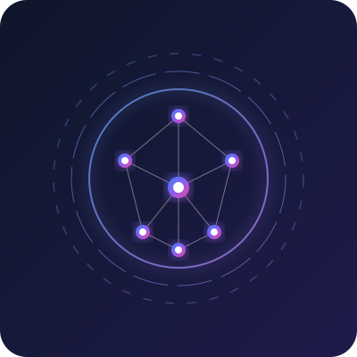

MS by Research Scholar @ IIIT Hyderabad
I am a graduate researcher at the International Institute of Information Technology, Hyderabad (IIIT-H) focused on next-generation deep learning for visual creation and control. My current research addresses the boundaries of Text-to-Image diffusion models, aiming to introduce explicit structural priors, pose control, and fine-grained layout awareness for composable asset generation.
Prior to my graduate studies, I spent over three years developing autonomy and computer vision stacks in research and industry labs, designing cross-camera pedestrian trackers, visual SLAM systems, and coordinated multi-agent ground vehicle navigation.

Harnessing diffusion models and latent spaces for precise content control, textual representation learning, and compositional fidelity.
Decomposing complex objects into structured semantic parts to allow fine-grained modification, layout alignment, and pose adaptations.
Combining bounding boxes, depth maps, and segmentation masks with diffusion text decoders for spatial semantic conditioning.
Developing robust, deep-feature localization and odometry stacks alongside ROS2 for robot navigation in GPS-denied environments.